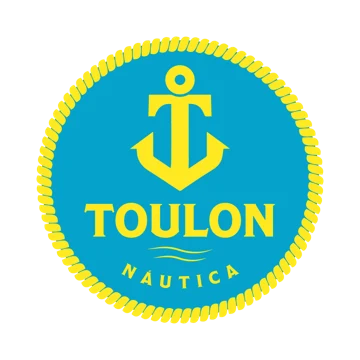
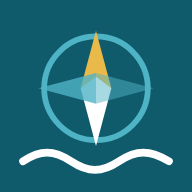

Esse aplicativo foi desenvolvido em parceria com a Toulon Náutica.
toque para pularBuscando previsão…
Vento, tempo e onda: previsão de modelos numéricos (ECMWF, GFS e outros) entregue pelo Open-Meteo, renovada a cada hora. Avisos de mau tempo: Marinha do Brasil (CHM), conferidos a cada 30 minutos. Posição das ilhas e praias: © colaboradores do OpenStreetMap. Ajuda a planejar, mas não substitui o olho do mestre. Os limites de bom, atenção e não ir são provisórios e vão ser ajustados com os barqueiros.
Baixe a carta e a previsão antes de sair. No mar, sem internet, a carta abre do mesmo jeito com a sua posição.
Satélite: Esri World Imagery (precisa de internet). Sem sinal, o app mostra a carta salva no celular. Cartas 1633 (Baía da Ilha Grande, Parte Oeste, com o plano da Baía de Parati) e 1634 (Da Ponta de Juatinga à Ilha das Couves) © Marinha do Brasil, DHN/CHM. Profundidades em metros, reduzidas ao nível de redução. Uso informativo e não comercial: não substitui a carta oficial atualizada pelos Avisos aos Navegantes.
Estimativa do modelo para a entrada da baía, em metros em relação ao nível médio do mar. Os horários batem bem; a altura pode variar. Antes de passar em lugar raso, confira a Tábua das Marés oficial da Marinha.
Coloque o Paraty Waters na tela inicial: abre como aplicativo, em tela cheia, e funciona sem sinal no mar.
As datas ficam guardadas só neste celular.
